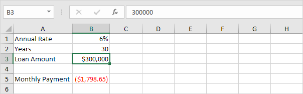
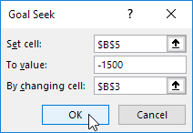
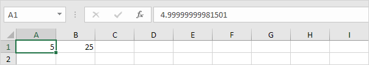
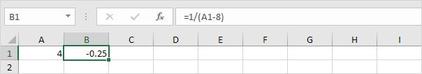
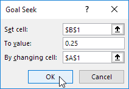

Goal Seek
Goal Seek Example 1 | Goal Seek Example 2 | Goal Seek Precision | More about Goal Seek
If you know the result you want from a formula, use Goal Seek in Excel to find the input value that produces this formula result.
Goal Seek Example 1
Use Goal Seek in Excel to find the grade on the fourth exam that produces a final grade of 70.
1. The formula in cell B7 calculates the final grade.
2. The grade on the fourth exam in cell B5 is the input cell.
3. On the Data tab, in the Forecast group, click What-If Analysis.

4. Click Goal Seek.

The Goal Seek dialog box appears.
5. Select cell B7.
6. Click in the 'To value' box and type 70.
7. Click in the 'By changing cell' box and select cell B5.
8. Click OK.
Result. A grade of 90 on the fourth exam produces a final grade of 70.
Goal Seek Example 2
Use Goal Seek in Excel to find the loan amount that produces a monthly payment of $1500.
1. The formula in cell B5 calculates the monthly payment.

Explanation: the PMT function calculates the payment for a loan. If you've never heard of this function before, that's OK. The higher the loan amount, the higher the monthly payment. Assume, you can only afford $1500 a month. What is your maximum loan amount?
2. The loan amount in cell B3 is the input cell.

3. On the Data tab, in the Forecast group, click What-If Analysis.
4. Click Goal Seek.
The Goal Seek dialog box appears.
5. Select cell B5.
6. Click in the 'To value' box and type -1500 (negative, you are paying out money).
7. Click in the 'By changing cell' box and select cell B3.
8. Click OK.

Result. A loan amount of $250,187 produces a monthly payment of $1500.
Goal Seek Precision
Goal seek returns approximate solutions. You can change the iteration settings in Excel to find a more precise solution.
1. The formula in cell B1 calculates the square of the value in cell A1.
2. Use goal seek to find the input value that produces a formula result of 25.
Result. Excel returns an approximate solution.
3. On the File tab, click Options, Formulas.
4. Under Calculation options, decrease the Maximum Change value by inserting some zeros. The default value is 0.001.
5. Click OK.
6. Use Goal Seek again. Excel returns a more precise solution.

More about Goal Seek
There are many problems Goal Seek can't solve. Goal Seek requires a single input cell and a single output (formula) cell. Use the Solver in Excel to solve problems with multiple input cells. Sometimes you need to start with a different input value to find a solution.
1. The formula in cell B1 below produces a result of -0.25.

2. Use Goal Seek to find the input value that produces a formula result of +0.25.

Result. Excel can't find a solution.
3. Click Cancel.
4. Start with an input value greater than 8.
5. Use Goal Seek again. Excel finds a solution.
Explanation: y = 1 / (x - 8) is discontinuous at x = 8 (dividing by 0 is not possible). In this example, Goal seek cannot reach one side of the x-axis (x>8) if it starts on the other side of the x-axis (x<8) or vice versa.